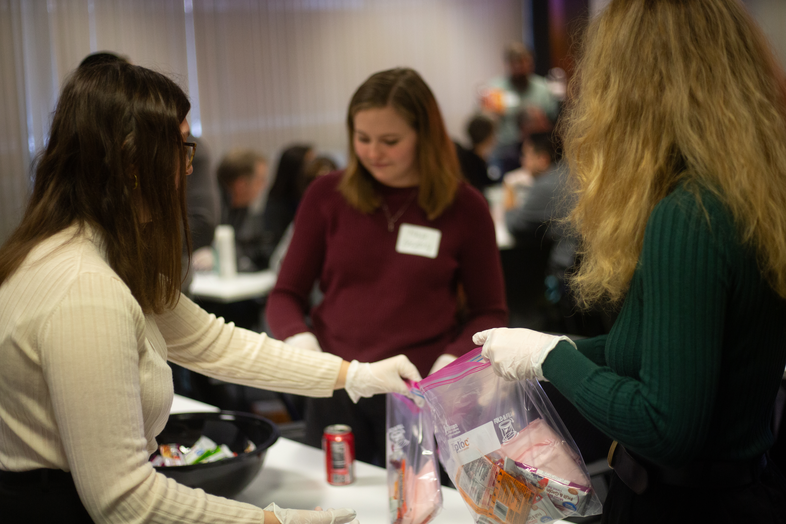
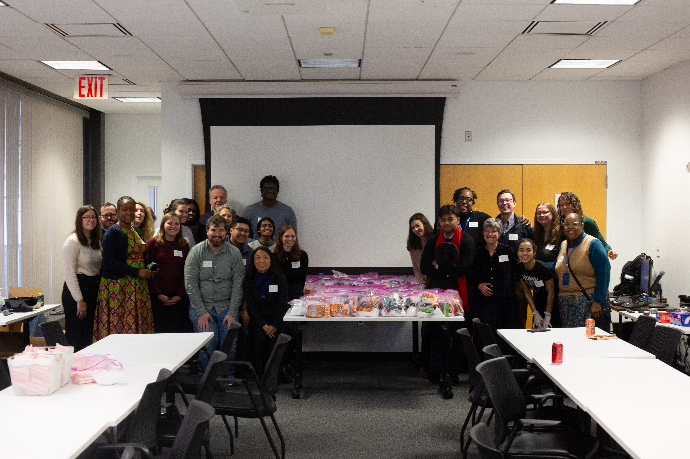
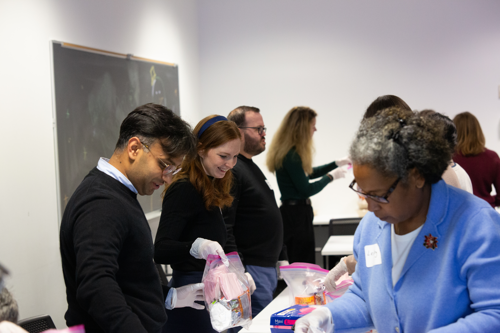
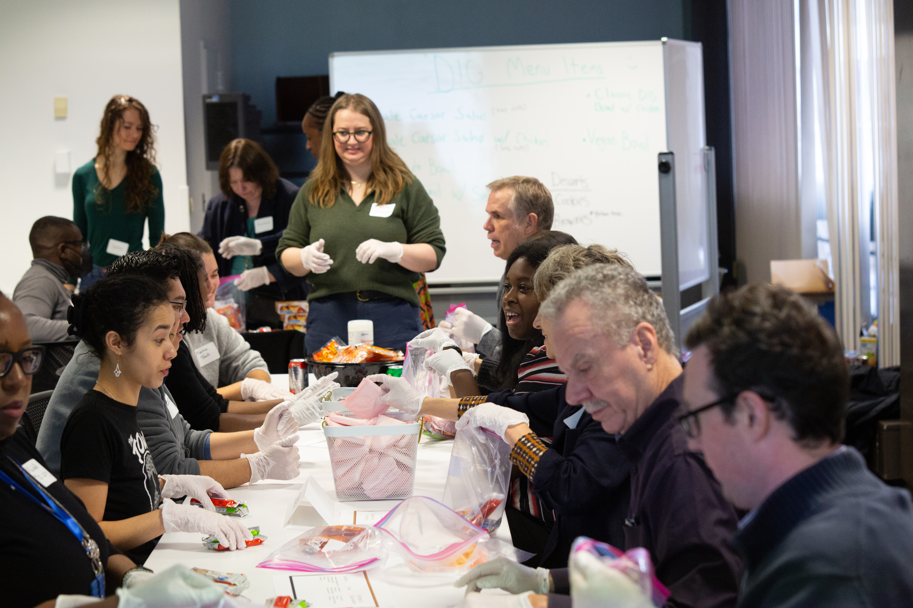

Community Work.
Davis Polk Leadership Initiative
Columbia University · Innovation Grant Recipient

As a recipient of the Davis Polk Leadership Initiative Innovation Grant, I received $1,000 to develop a project designed to strengthen relationships within the Columbia community while building connections with the surrounding Morningside Heights and Harlem communities.
I organized a service event that brought Columbia faculty and support staff together to assemble care packages for unhoused members of the surrounding community. The event was designed both to foster relationships among colleagues across the university and to create an opportunity for the Columbia community to serve its neighbors together.
In partnership with the Columbia Law School Legal Outreach Team, participants assembled more than 250 care packages containing essentials including hygiene and sanitary products, hand warmers, snacks, and other necessities for distribution to unhoused people in Harlem and Morningside Heights.



Justice-in-Education Initiative
Columbia University · Lead Workshop Coordinator
November 2023 – May 2025Through Columbia University's Justice-in-Education Initiative, I volunteered weekly at Rikers Island, where I led a book club for incarcerated women participating in substance use recovery programming.